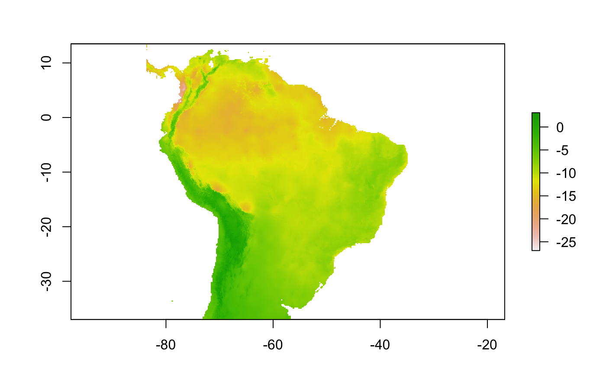

create_buffer.RdThis function is used internally by function
setup_sdmdata to define the area where pseudoabsences will be
sampled in different ways. First, it can create a maximum inclusion buffer,
within which the pseudoabsences will be sampled, to restrict model evaluation
to accesible areas. This can be performed by either setting a user-defined
shapefile, or by selecting one of several distance measures, including a
numeric fixed value, to draw a buffer around the occurrences. In addition to
this, an euclidean environmental distance can be superimposed to the
previous step. The third step aims to control for overfitting by excluding
areas that are too close to the occurrence points, with parameter "dist_min".
The function will return the resulting buffer as a RasterStack object with
the same resolution and NA values of the predictors RasterStack.
create_buffer(species_name, occurrences, lon = "lon", lat = "lat", predictors, buffer_type = "median", dist_buf = NULL, env_buffer = FALSE, env_distance = "centroid", dist_min = NULL, max_env_dist = 0.5, buffer_shape, models_dir = "./models", write_buffer = FALSE)
| species_name | A character string with the species name. Because species
name will be used as a directory name, avoid non-ASCII characters, spaces and
punctuation marks.
Recommendation is to adopt "Genus_species" format. See names in
|
|---|---|
| occurrences | A data frame with occurrence data. Data must have at least
columns with latitude and longitude values of species occurrences.
See |
| lon | The name of the longitude column. Defaults to "lon" |
| lat | The name of the latitude column. Defaults to "lat" |
| predictors | A Raster or RasterStack object with the environmental raster layers |
| buffer_type | Character string indicating whether the buffer should be
calculated using the " |
| dist_buf | Defines the width of the buffer. Needs to be specified if
|
| env_buffer | Logical. Should an euclidean environmental filter be
applied? If TRUE, |
| env_distance | Character. Type of environmental distance, any in
" |
| dist_min | Optional, numeric. A distance for the exclusion of areas too close from the occurrence points. Distance unit is in the same unit of the RasterStack of predictor variables |
| max_env_dist | Numeric. Since large negative values can arise
during the calculation of the euclidean environmental distance, this
parameter sets a maximum value to cut the environmental distance buffer.
Expressed in quantiles, from 0: all values to 1: no values. Defaults to 0.5,
the median value. Needs to be specified if |
| buffer_shape | User-defined buffer shapefile in which pseudoabsences
will be generated. Needs to be specified if |
| models_dir | Folder path to save the output files. Defaults to
" |
| write_buffer | Logical. Should the resulting RasterStack be written? Defaults to FALSE |
Table of pseudoabsence points sampled within the selected distance
A buffer around the occurrence points
VanDerWal, J., Shoo, L. P., Graham, C., & Williams, S. E. (2009). Selecting pseudo-absence data for presence-only distribution modeling: How far should you stray from what you know? Ecological Modelling, 220(4), 589-594. doi:10.1016/j.ecolmodel.2008.11.010
buffer in raster package
randomPoints in dismo package
library(raster)#>sp <- names(example_occs)[1] occs <- example_occs[[1]] buf <- create_buffer(species_name = sp, occurrences = occs, predictors = example_vars)#> Warning: Spatial object 1 is not projected; GEOS expects planar coordinates#> Warning: Spatial object is not projected; GEOS expects planar coordinatesplot(buf)